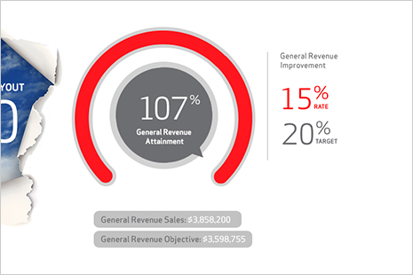
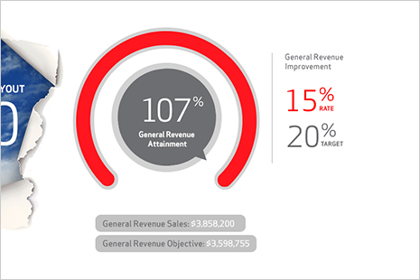
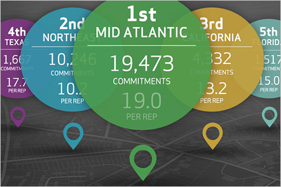
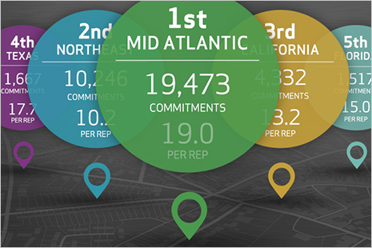

Dials & Knobs
There are plenty of ways to show progress. Sure, the classic "progress bar" will never go out of style. But nowadays, the progress dial is gaining traction as everybody's favorite way to express percentages of a whole. Want to show how close a participant is to goal? Try a couple cool dials. They're easy to read, easy to follow, and best of all - animated!
 



 
